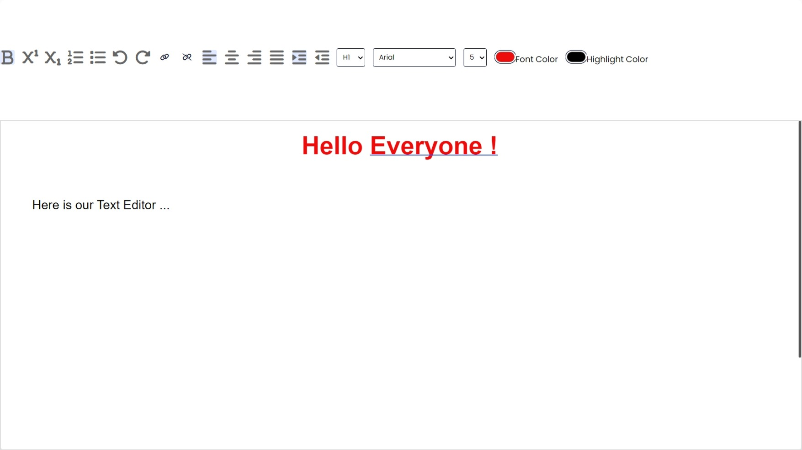

This is a simple Text editor tool with minimal features like Creating a virtual word file, Aligning, make bold, Italic, Change font-size, font color changings and download features.
In future, image and table insertion features will be provided.

Build: It is so simple that according to your options and selections, the CSS will be changed for them to be look like a Word file.
Advantages : No need to rush to the MS Word for smaller tasks. Simply Go, Write and Save ! Infact, we have created the Abstract of this project using this Editor.
Disadvantages: Same thing in Code Editor that this is a virtual editor so you have to download them to store in your local storage.